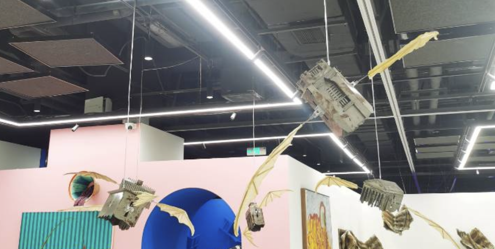

本文系 2022 年 5 月的一次对话，Babble 于 2023 年 3 月收录时进行了整理和修改。
10月22日，Fendi 正式入驻意大利文化宫的新总部。作为罗马建筑的标志，这家地标性建筑在 Fendi 资助下经历重大翻修，继续支持这座永恒之城的历史遗产古迹。在全力修葺许愿池喷泉翻修之后，Fendi 支持修缮已 40 多年未使用的意大利文化宫。纪念碑于 1942 年为万国博览会建造，已成为意大利创造力和工艺的象征。
Fendi 主席兼首席执行官 Pietro Beccari 表示：「我们非常自豪回归这座代表罗马之根的意大利文化宫，它代表传统和现代的持续对话，而这些价值观始终是 Fendi 的核心。」
Fendi 还特意将宫殿的一层开辟出来作为艺术展区，面向公众开放。首个展览名为 Una Nuova Roma。L’Eur e il Palazzo della Civiltà Italiana，它将重温文化宫的历史，并一直开放至 2016 年 3 月 7 日。LVMH - Fendi 正式启用罗马新总部
「极权时代诞生的建筑，如何在当下再用？」
标志性建筑理论。意象随着时代的变迁改变了，但是建筑的内核还是没变。
抛去价值内核单论那段描述，这座建筑挺适合 FENDI 的。
当政治通过建筑将独立的个体纳入进权力的机器，进而成为群体意识形态的象征之物，若导致为恶，是否就意味着建筑就应因此获罪呢？对于建筑而言，是否存在一个超越于善恶的审美视角，来重估古典主义 / 理性主义的建筑的本身的价值呢？
DerZug - 极权时代诞生的建筑，如何在当下再用？
这篇文章写得很浅，但是译者提出的问题很有意思。
我觉得是希望借此「脱离指责」的概念，重新演绎成一个全新的建筑意象。
「建筑的虚无主义」：精准的秩序、强健的肉体和精神、权威与意识
在建筑的顶部，一段浪漫的意大利图景被硕大的字母拼出 ：
「这是诗人的、艺术的、英雄的、圣徒的、思想的、科学的、航海的、开拓的人民。」
（Un popolo di poeti, di artisti, di eroi, di santi, di pensatori, di scienziati, di navigatori, di trasmigratori）它的底部环绕着 28 座大理石雕像，寓意着顽强的法西斯精神 —— 社会秩序，劳动力、物理和军事天才。
我没看出这座建筑有任何驳斥这种建构的观感，反倒是在有意识无意识之间去迎合这种建筑。这类似的建构迎合了人类的生物性冲动和民族主义思想的冲动，被规训和信任自己强健于他人的冲动。
同时我也没看出驳斥建构的观感，反倒是更加清晰和扩大的建构，内化的建构。
国会山 · 白宫建筑群的形体和这座方碑建筑本身的概念实际上是契合的：秩序、权威、意志和力量。
我只看到了内化的秩序。
这是一种话语体系的延续。
但是建筑作为建筑的本身是纯粹的。
是的，而建筑始终带有着某种标志性：影响生活、影响视线和精神的标志性。
FENDI 本身在文明宫建筑改造层面反映的观念，和本身这座建筑传递的价值，实际来说没有任何变化。静肃高大的雕塑形象，很明显的精神化建筑。
诚如所言。这是为什么它值得我们警惕。
那我们应该怎样处理这些建筑？让它们成为历史的沙砾？
但是我们前面所讨论的「建筑的纯粹性」就在这里。
建筑本身存在形式主义价值。
回归建筑的雕塑本源，弘扬高技派的理想，回归建筑的使用原点，脱离建筑「交互」的精神价值，这件事本身就是「反建筑」的。
张扬审美而因此贬低意识形态，我觉得这个回答不新鲜，且太过轻佻。
我的犹豫在于，意识形态内生于审美，在纯粹地走向审美而忽视它的意识形态性的时候，我们其实仍然不自觉地认同了那些潜在的隐喻。
「道德要求不仅仅属于作者（或改造者），还应该同样要求观看者。」（王小鲁）
那些潜在的隐喻仍然蛰伏在形式之中，如果我们的观众没有能够即使分辨那些应当警惕的，那么那些幽灵总会死而复生。
但这实在是个两难问题。建筑本身所具有的某种「精神性」和「交互性」，人作为建筑的使用者，很容易受到明显的隐喻或者隐晦的隐喻的感召。你还记得安藤忠雄的那束光嘛？
单纯作为建筑形体和场域形成的一种精神性就很难把握。FENDI 这座建筑目前的方向在于「换用建筑观感」—— 业主变了，看法是不是会不一样？脱离这座建筑原始存在的历史隐喻去看，这座建筑体现的丰碑性和奢侈品牌塑造的品牌价值本身是契合的。
但如果站在一个不了解这座建筑「历史罪责」的角度上，看到这座建筑形体，本身就会……
对，怕就怕在不了解历史。这份价值观其实早就已经被资本化用了。
怕就怕在历史被遗忘，后来的观众因为它的美丽而主动认同那些蛰伏的秩序、权威、古典、意志。然后走向法西斯。
包括很多建筑在内，都是标志性极强的秩序形体，这种形体的价值感体现就很强烈。
展露在公众视野中的建筑，在他们的心中扎下隐喻的根。

隐喻是漂浮在头顶的蝙蝠。
这个形体就是在告诉你，「这个设计和价值观是错误的」。但是没有影响你欣赏建筑本身存在的纯粹的审美体验，实际上我们早已有了实践 —— 用标志去覆盖曾经的标志。具有破坏性，但是更开放了。例如卢浮宫的玻璃金字塔：在皇宫广场置入一个纯净的模块，打破了原有营造的空间关系，使这个场域更开放了。
但是城市四处可见标志性的不明隐喻。
类似 CBD 区域的构筑物堆叠，本身也是部分权利集中于部分区域的现代化延伸。这也是一种我们不得不接受的隐喻，只不过是新时代的新注脚罢了。
城市的集会属性来源自城市的形态。城规变革越来越侧重交融，用不同的信息冲刷市民的集体需求。不过就我来说，城市权利当做议题本身被提出，还是一个伪命题，是被城市框定的虚假结果，本质还是个人需求，且是包裹在集体中被削弱的个人需求。这实在是一件悲伤的事情。